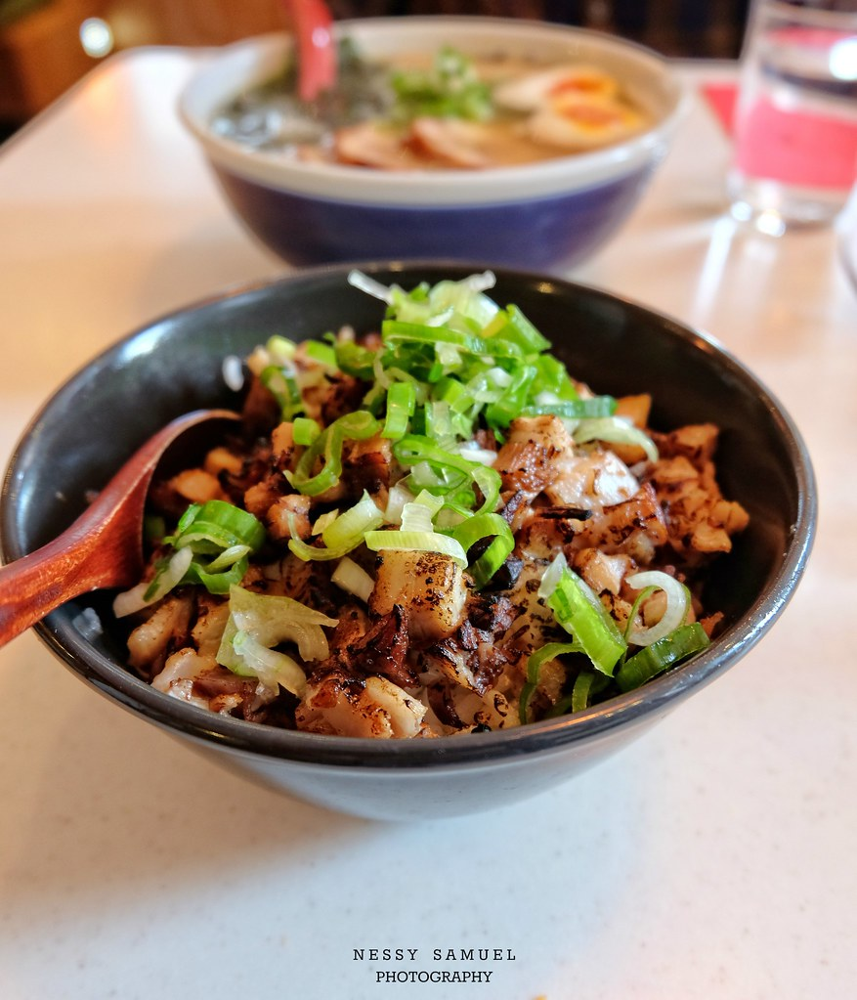

Pork Bowl
Home

A savory and rich dish for a cold winter day!
Fatty pork with green onion and topping over short-grain rice
Ingredient listed below:
- Pork belly
- Green onion
- Short-grain rice
- Bamboo shoots
- Soy sauce
- (Optional) Cooking torch
- Roll and tie pork belly using butchers twine.
- Chop green onions.
- Steam rice for 20 Mins.
- Sear pork belly and cook in soy sauce braising for 1 hour.
- slice pork belly in discs and use torch to sear of desired. (optional)
- Fluff rice and srve in bowl.
- Place sliced pork belly over rice and garnish with green onion and bamboo shoots.